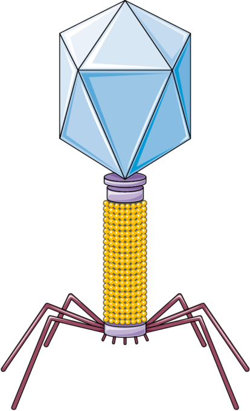
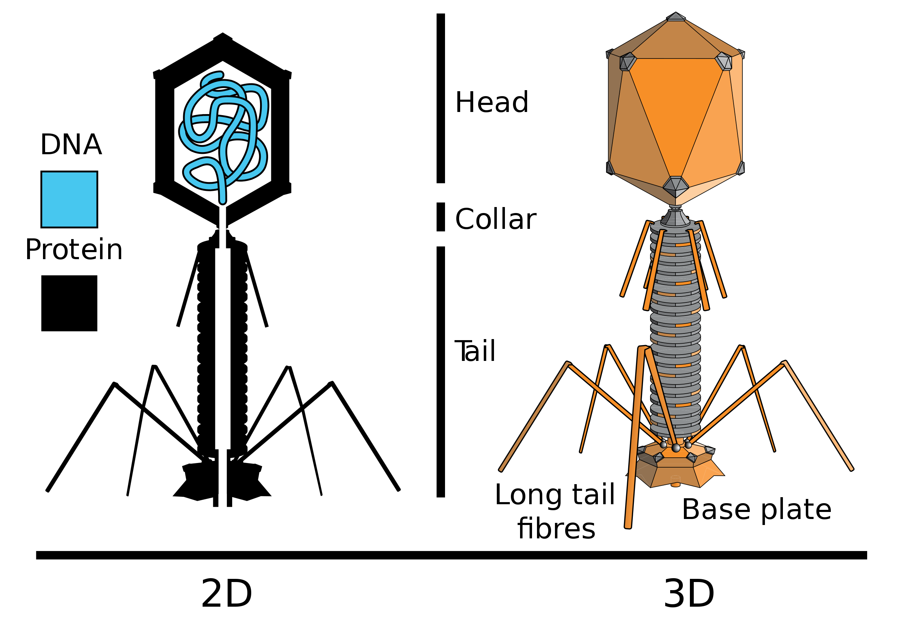

განმარტება
ბაქტერიოფაგი არის ვირუსის ტიპი, რომელიც აინფიცირებს ბაქტერიებს .
სიტყვა " ბაქტერიოფაგი" სიტყვასიტყვით ნიშნავს " ბაქტერიების მჭამელს ".
ეს სახელი იმის გამო უწოდეს, რომ ბაქტერიოფაგები ანადგურებენ მათ მასპინძელ ბაქტერიულ უჯრედებს .
აგებულება
ყველა ბაქტერიოფაგი შედგება ცილოვანი გარსისა და მასში მოთავსებული გენეტიკური ინფორმაციისაგან .
გენეტიკური ინფორმაცია შეიძლება იყოს მხოლოდ დნმ ან მხოლოდ რნმ. ორივე მათგანი ერთდროულად ბაქტერიოფაგში არ გვხვდება.
